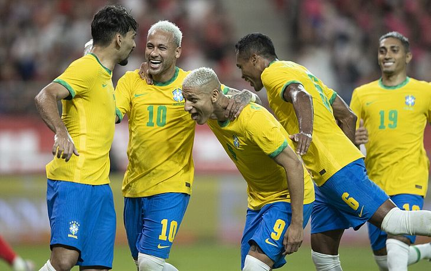
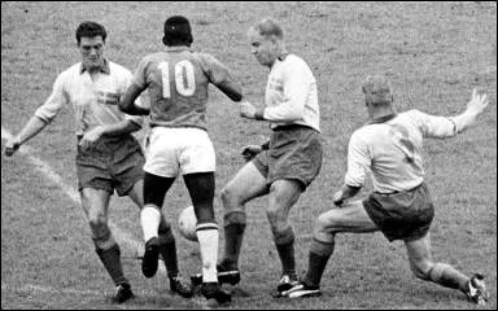
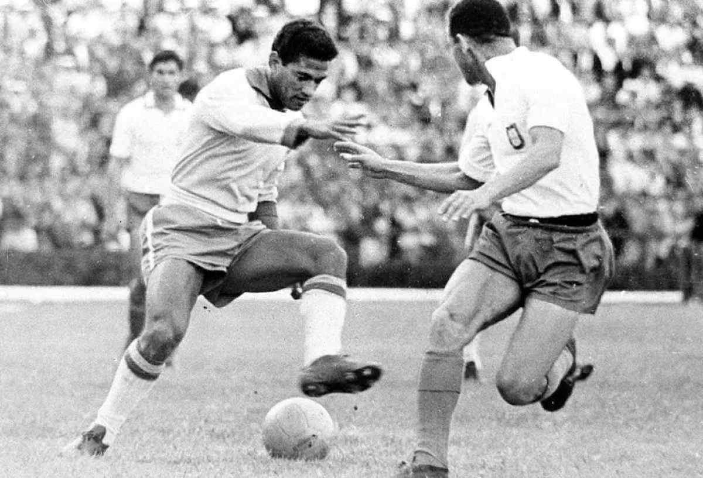
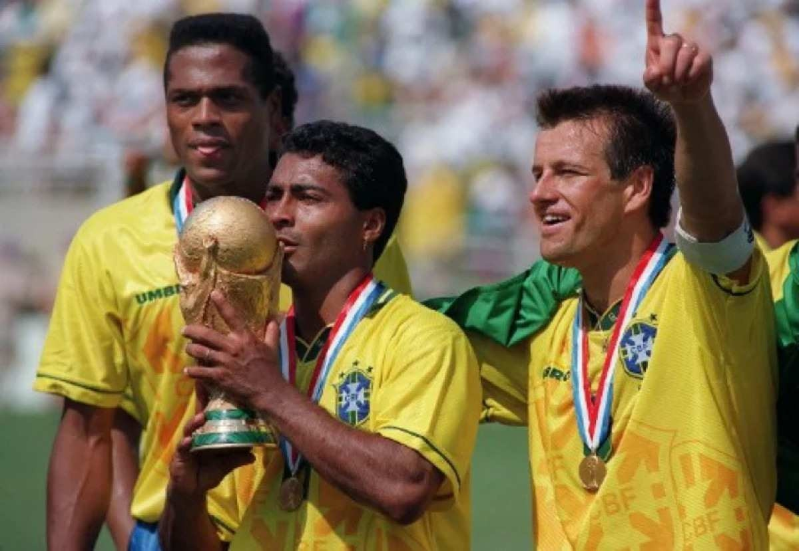
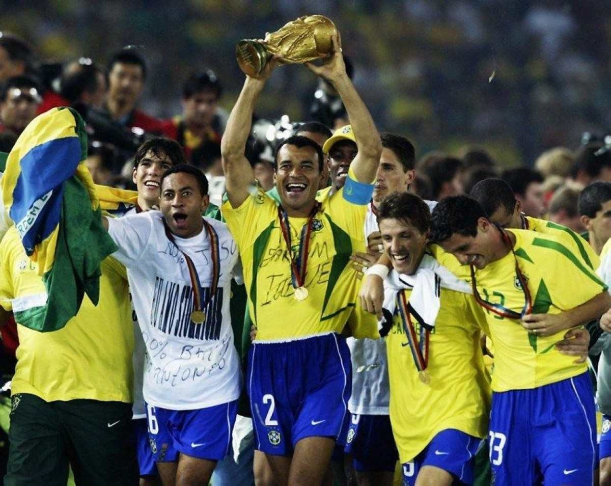

Próximos jogos do Brasil na Copa do Mundo.

O Brasil estreou na Copa do Mundo com o pé direito. Na quinta-feira, a Seleção Brasileira venceu a Sérvia por 2 a 0 e deu início à caminhada rumo ao Hexa. Abaixo, o LANCE! apresenta detalhes sobre as datas e os horários dos próximos jogos do Brasil no Mundial.
SEGUNDO JOGO
28/11 - Brasil x Suíça - 13h (de Brasília)
O segundo jogo do Brasil na Copa é contra a Suíça, na próxima segunda-feira (28), às 13h (de Brasília), no Estádio 974.
TERCEIRO JOGO
02/12 - Camarões x Brasil - 16h (de Brasília)
O Brasil encerra sua participação na fase de grupos contra o Camarões na sexta-feira, 2 de dezembro, às 16h (de Brasília), no Estádio de Lusail.
E NO MATA-MATA?
Se passar em primeiro lugar do Grupo G:
Oitavas de final - 5 de dezembro, às 16h.
Quartas de final - 9 de dezembro, às 12h.
Semifinal - 13 de dezembro, às 16h.
Final - 18 de dezembro, às 12h.
Se passar em segundo lugar do Grupo G:
Oitavas de final - 6 de dezembro, às 16h.
Quartas de final - 10 de dezembro, às 12h.
Semifinal - 14 de dezembro, às 16h.
Final - 18 de dezembro, às 12h
Quais Copas do Mundo o Brasil ganhou, Relembre a história dos títulos.

1) Copa de 1958 — campeão
O Mundial de 1958 foi realizado na Suécia e foi a sexta edição da Copa do Mundo da Fifa. No torneio daquele ano, 16 seleções participaram dos jogos, sendo a maioria europeias (12) e apenas quatro do continente americano — Brasil, Argentina, Paraguai e México.
O confronto ocorreu entre 8 e 29 de junho e o Brasil passou pela fase de grupos ao vencer a Áustria e a União das Repúblicas Socialistas Soviéticas (URSS), além de empatar com a Inglaterra. A URSS também se classificou para as quartas de final do torneio.
Pelé, Garrincha, Vavá e Didi foram os grandes responsáveis por levar o Brasil até a final, após vencer o País de Gales, nas quartas, e a França, na semifinal. Em 29 de junho, as seleções brasileira e sueca entraram em campo para disputar o título de melhor do mundo.
A partida começou com um gol da Suécia, mas logo o empate foi conquistado pelo Brasil. Ainda no primeiro tempo o Brasil fez o segundo gol. No segundo tempo, foram mais três para a Seleção brasileira, e apenas um para a Suécia. O primeiro mundial do Brasil foi conquistado por cinco gols feitos por Vavá (2), Pelé (2) e Zagallo (1).

2) Copa de 1962 — bicampeão
Em uma edição disputada em solo sul-americano, o Brasil entrou na Copa do Mundo no Chile, em 1962, com vantagens na disputa: um título fresquinho conquistado quatro anos antes. Dezesseis Seleções participaram do campeonato, inclusive Colômbia e Bulgaria — que estrearam no Mundial neste ano.
Os jogos ocorreram entre maio e junho de 1962. Na primeira fase, o Brasil saiu vitorioso sobre o México e a Espanha, e empatou no 0x0 com a Tchecoslováquia. Nas quartas de final, venceu por 3 a 1 a Inglaterra e, na semifinal, fez 4 gols contra a Seleção anfitriã, que fez apenas dois gols. A final, disputada em 17 de junho de 1962, colocou, novamente, Brasil e Tchecoslováquia frente a frente. Na fase dos grupos, a Seleção brasileira não conseguiu pontuar e sem Pelé no time, contundido na primeira partida com a seleção adversária, o receio da vitória era grande.
Pelé foi substituído por Amarildo desde a fase dos grupos, atleta que honrou a trajetória do Rei do Futebol: se tornou vice-artilheiro da Copa e foi responsável pelo primeiro gol do Brasil na final. Outros dois vieram, um de Zito e outro de Vavá. A Tchecoslováquia saiu derrotada após acertar a rede apenas uma vez e o Brasil subiu ao pódio como bicampeão do Mundo.

Copa de 1970 — tricampeão
O tricampeonato do Brasil foi disputado no México em 1970. A Copa daquele ano teve um gosto especial para os brasileiros: foi a primeira vez que os jogos foram transmitidos ao vivo pelos canais brasileiros, por meio de um pool de emissoras. O campeonato ocorreu entre 31 de maio e 21 de junho de 1970 com a participação de 16 seleções — os times de Marrocos, Israel e El Salvador fizeram a estreia no Mundial neste ano. Essa foi a primeira Copa em que substituições foram permitidas e que o uso dos cartões amarelo e vermelho para sinalizar advertências e expulsões foi utilizado — em outras edições, as punições já eram dadas, mas o recurso visual não era utilizado.
Em um grupo com Inglaterra, Romênia e Tchecoslováquia, o Brasil foi o primeiro classificado para as quartas, seguido pela seleção inglesa. Nas quartas, o Brasil fez quatro gols contra 2 do Peru e conquistou uma vaga nas semifinais, disputada contra o Uruguai. Na partida, em 17 de junho, Clodoaldo, Jairzinho e Rivellino fizeram, cada, um gol e a partida terminou em três a um contra o time uruguaio.
Em 21 de junho, o Brasil entrou em campo no mesmo patamar da adversária, a seleção da Itália. Ambos os times eram bicampeões do Mundo. Aos 18 minutos do primeiro tempo, Pelé abriu o placar. Na sequência, a Itália empatou, mas não resistiu ao ataque brasileiro no segundo tempo. Gérson, Jairzinho e Carlos Alberto atingiram em cheio a rede atrás do goleiro italiano e consagraram o Brasil como tricampeão do mundo.
Naquele ano, a Seleção brasileira despontou como a única a ser três vezes campeã, ultrapassando Itália e Uruguai.

Copa de 1994 — tetracampeão
Após 24 anos do tricampeonato, o Brasil entrava em campo com vontade para conquistar o quarto título de melhor do Mundo na Copa de 1994, realizada nos Estados Unidos. O torneio ocorreu entre 17 de junho e 17 de julho e contou com 24 seleções na disputa.
O Brasil teve duas vitórias na fase de grupos, contra Rússia e Camarões, e um empate contra a Suécia. Nas oitavas de final, o Brasil venceu o anfitrião, os EUA, com um gol de Bebeto. Nas quartas, a vitória da Seleção foi contra o Países Baixos, por 3 a 2.
Após vencer a Suécia por 1 a 0, com gol de Romário, o Brasil entrou em campo contra a Itália em 17 de julho, repetindo o confronto visto na final de 1970, no México. Em 1994, a Itália já havia se igualado ao Brasil e se tornado, também, tricampeã do mundo. O confronto foi inédito e, pela primeira vez, a decisão foi decidida por pênaltis após os dois tempos e a prorrogação terminar em 0 a 0. Romário, Branco e Dunga acertaram os três chutes ao gol que deram o tetracampeonato ao Brasil.
Romário, o baixinho, se consagrou como o craque brasileiro no Mundial, ao lado de Bebeto. Na defesa, Dunga e Mauro Silva se destacaram. Com a vitória, Zagallo se tornou o único homem a vencer o Mundial quatro vezes: duas como jogador (1958 e 1962), uma como técnico (1970) e, em 1994, como coordenador técnico.

Copa de 2002 — pentacampeão
Em 2002, a Copa do Mundo foi sediada, pela primeira vez, por dois países, a Coreia do Sul e o Japão e contou com a participação de 32 seleções. A edição daquele ano também marcou história ao ser realizada, pela primeira vez, em países fora da Europa ou das Américas. Na fase de grupos, o Brasil conseguiu uma vaga nas oitavas de final após conquistar o primeiro lugar por ter derrotado todos os outros times do grupo — Turquia, China e Costa Rica.
A dupla Rivaldo e Ronaldo, que ficou marcada como a melhor do campeonato, conquistaram a vaga do Brasil nas quartas de final após marcar dois gols contra a Bélgica, que não conseguiu pontuar contra a seleção.
Rivaldo e Ronaldinho Gaúcho, outra dupla que deu certo em 2002, garantiram a semifinal ao furarem duas vezes o bloqueio da Inglaterra nas quartas de final. A semifinal, disputada entre Brasil e Turquia, foi decidida por um gol de Ronaldo Fenômeno.
Em 30 de junho, o título de pentacampeão do Mundo, inédito até o momento, foi conquistado pelo Brasil, com dois gols do Fenômeno, sobre a Alemanha, que não conseguiu balançar a rede do lado brasileiro.
.png)